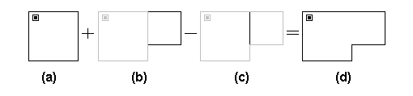

您可以通过添加和删除墙部分来修改墙的位置或形状。例如下图中，如果要修改图(a)中的房间以获得图(d)中的房间，则需要先添加图(b)中的暗线，然后删除图(c)中的暗线。

修改墙壁时，您可能需要移动或删除其他图标。例如，在下图中，要从图形 (a) 创建图形 (c)，您需要从图 (b) 中删除亮线和亮区图标。您必须删除两个房间图标之一，否则最终会在同一封闭墙房间内出现两个房间图标。这是不允许的，您将收到一条消息，指示房间定义错误。